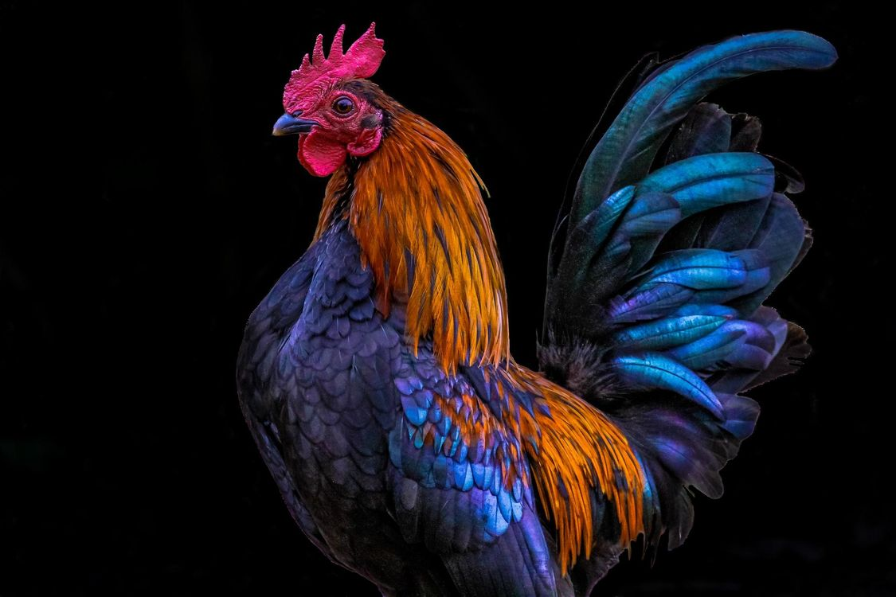

личный рассказ о петухе!
немного о петухах

петух — самец курицы; в общем смысле, самцы всех птиц отряда курообразных. Внешне от курицы обычно отличается крупным гребнем и серьгами, также пышным и часто разноцветным хвостовым оперением. Как и курица, имеет ряд звуковых сигналов.
немного подробнее о петухахпройдемся подробнее по нюансам такого домашнего животного
из плюсов владения петухом можно выделить

- стабильный будильник
- всегда есть чем заняться
- всегда в центре внимания
- это не гусь!!!
из очевидных минусов я хоетл бы выделить

- отсутствие возможности выбора времени подьема
- отсутствие возможности приобретения гусей